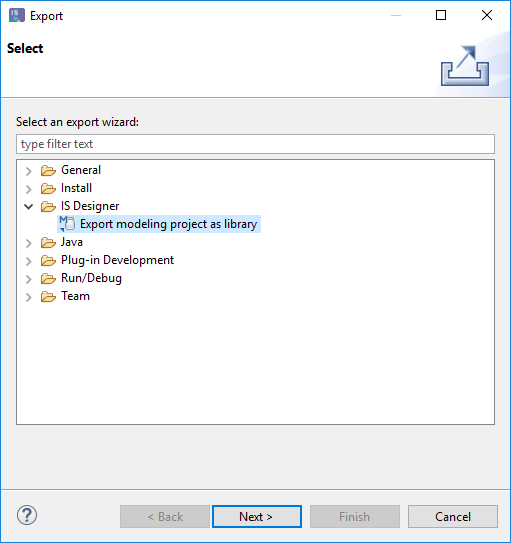
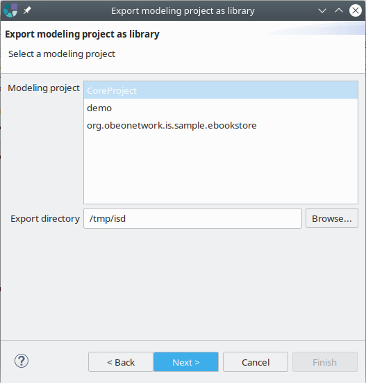
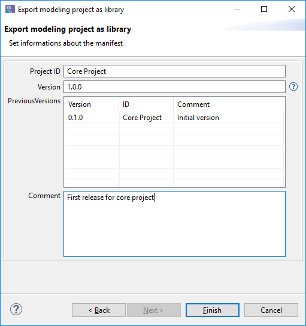
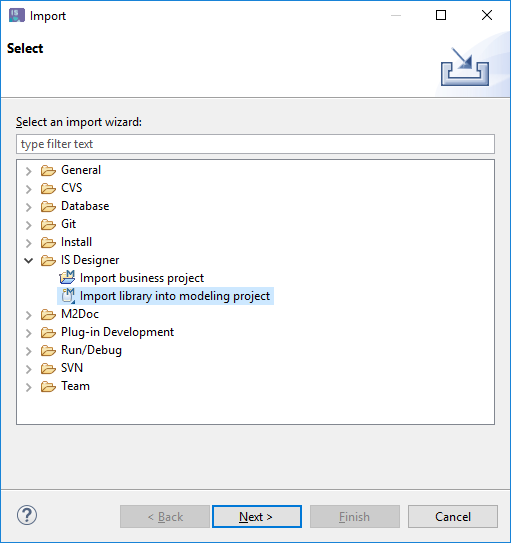
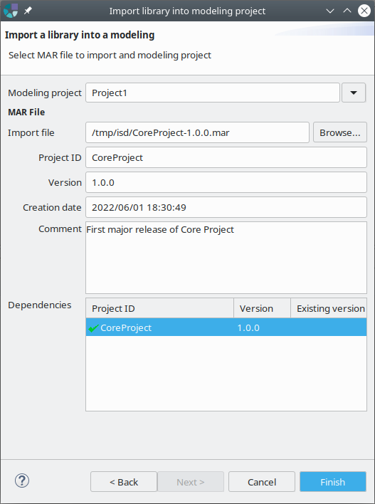
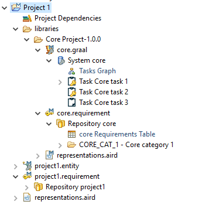
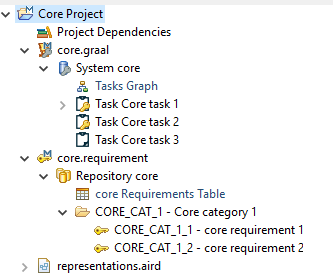
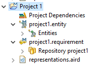
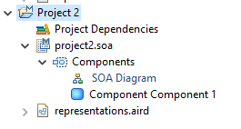
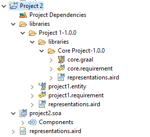

Copyright © 2008, 2023 Obeo - All rights reserved. This program and the accompanying materials are made available under the terms of the Eclipse Public License v1.0
Depuis IS Designer 1.8.
Permet d’exporter un modeling project en tant que fichier de bibliothèque et de l’importer dans d’autres modeling projects.
Lorsqu’une bibliothèque est exportée, l’utilisateur choisit un numéro de version. Ce numéro de version est vérifié lors de l’importation de la bibliothèque dans un autre modeling project. Les références aux éléments contenus dans la bibliothèque sont mises à jour automatiquement.
Ceci est utile pour réutiliser les bibliothèques entre différents projets, en gardant la trace des versions.
Les fichiers de la bibliothèque portent l’extension .mar (signifiant Modeling ARchive en anglais).
Pour exporter un modeling project en tant que bibliothèque, utiliser le menu File > Export... et choisir Export modeling project as library dans la catégorie IS Designer.

La première page de l’assistant permet de définir les informations suivantes :

La deuxième page permet de définir les informations suivantes :

Lorsque l’assistant est terminé, un fichier MAR est généré à l’emplacement spécifié. Ce fichier peut ensuite être importé dans un autre modeling project.
Pour importer un fichier de bibliothèque dans un modeling project, utilisez le menu File > Import... et choisissez Import library into modeling project dans la catégorie IS Designer.

L’assistant permet de définir :

Une fois que le fichier MAR a été sélectionné, les informations suivantes sont extraites du fichier et affichées :
Les dépendances sont affichées avec une coche verte ou rouge indiquant si la dépendance est valide ou non par rapport au projet cible.
Si toutes les dépendances sont valides, l’utilisateur peut terminer l’assistant. Le fichier est alors importé dans un dossier
libraries du projet cible.
Un dossier portant le nom et l’ID du projet importé est créé. Toutes les données sémantiques et graphiques sont copiées dans ce dossier.

Lors de l’importation d’un fichier MAR, le tableau des dépendances indique :
Voici un exemple illustratif :


Un dossier libraries a été créé et un dossier pour Core project V1.0.0 a été créé également.


Un dossier
libraries a été créé et un dossier pour
Project 1 V1.0.0 a également été créé.
A l’intérieur du
Projet 1-1.0.0 nous pouvons voir un dossier
libraries pour le projet
Core project précédemment importé.